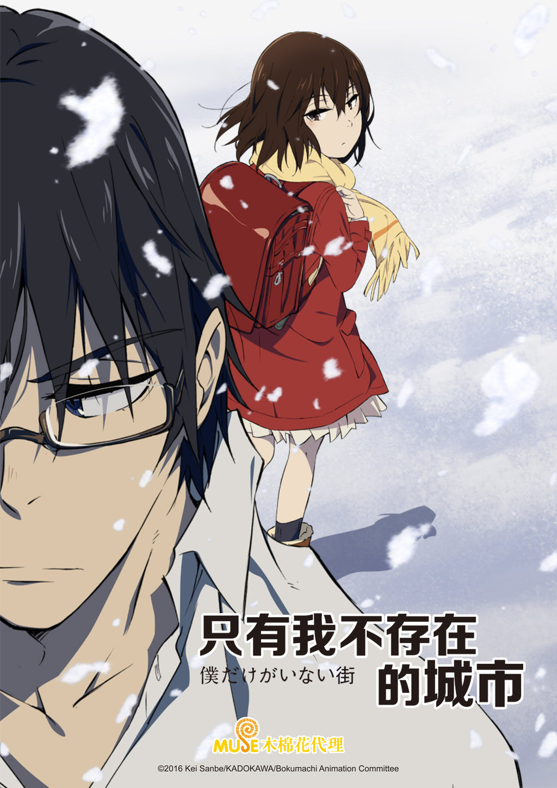

AnimeInterester
只有我不存在的城市

故事簡介
藤沼悟因為現實生活不順遂而持續掙扎，擁有著「重播」的穿越時空能力，簡單來說就是可主或被動地將時間反覆倒帶重播，藉此阻止「事件」的發生。而他某天下班回到家時，母親已經遭到殺害，自己還被嫁禍成弒親兇手。這時「重播」啟動了，一睜開眼自己竟然已經回到十八年前...
製作人員
原作：三部けい
導演：伊藤智彦
劇本統籌：岸本卓
角色設計：佐々木啓悟
色彩設計：佐々木梓
美術監督：佐藤勝
美術設定：長谷川弘行
攝影監督：青嶋俊明
CG監督：那須信司
剪輯：西山茂
音樂：梶浦由記
音響監督：岩浪美和
製作：アニメ「僕街」製作委員会
聲優名單
藤沼悟(10歳)：土屋太鳳
藤沼悟(29歳)：満島真之介
雛月加代：悠木碧
片桐愛梨：赤﨑千夏
小林賢也：大地葉
杉田廣美：鬼頭明里
修：七瀬彩夏
和：菊池幸利
白鳥潤：水島大宙
藤沼佐知子：高山南
八代學：宮本充
各集標題
| 話數 | 標題 |
|---|---|
| 1 | 走馬燈 |
| 2 | 手掌 |
| 3 | 瘀青 |
| 4 | 達成 |
| 5 | 逃亡 |
| 6 | 死神 |
| 7 | 失控 |
| 8 | 螺旋 |
| 9 | 閉幕 |
| 10 | 歡喜 |
| 11 | 未來 |
| 12 | 寶藏 |